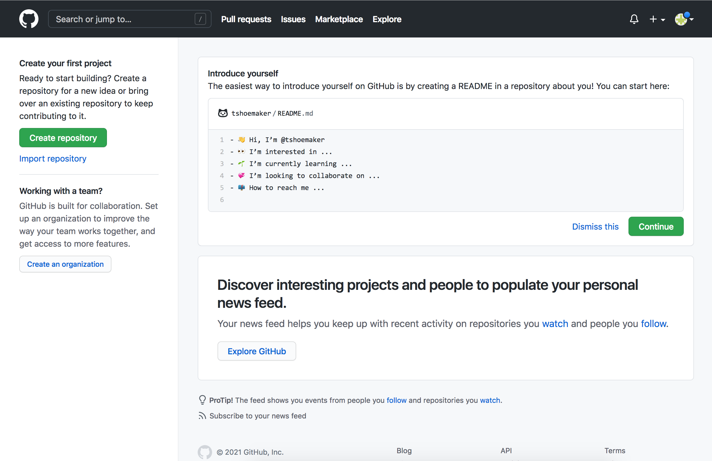

2 Version Control
This lesson introduces version control systems (VCS): software tools to track and record changes to files. Along the way, you’ll learn how to use Git, the VCS used by more than 90% of programmers. You’ll also learn how to use GitHub, a web site for storing, sharing, and collaborating on files tracked by Git.
After this lesson, you should be able to:
- Explain the purpose of using a version control system (VCS)
- Understand the different types of VCS: local/server and centralized/distributed
- Explain what a repository is
- Initiate a Git repository
- Stage and commit changes within a Git repository
- Utilize different Git commands such as
git log,git status - Explain the functionality of GitHub
- Set up a GitHub account that is authenticated by an SSH key
- Sync a local Git repository to a remote GitHub repository from the command line
- Clone a remote GitHub repository locally to your computer
2.1 Introduction to Version Control
2.1.1 What is Version Control?
Version control describes a process of storing and organizing multiple versions (or copies) of documents that you create. Approaches to version control range from simple to complex and can involve the use of various human workflows and/or software applications to accomplish the overall goal of storing and managing multiple versions of the same document(s).
Most people have a folder/directory somewhere on their computer that looks something like this:
Or perhaps, this:
This is a rudimentary form of version control that relies completely on the human workflow of saving multiple versions of a file. This system works minimally well, in that it does provide you with a history of file versions theoretically organized by their time sequence. But this filesystem method provides no information about how the file has changed from version to version, why you might have saved a particular version, or specifically how the various versions are related. This human-managed filesystem approach is more subject to error than software-assisted version control systems. It is not uncommon for users to make mistakes when naming file versions, or to go back and edit files out of sequence. Software-assisted version control systems (VCS) such as Git were designed to solve this problem.
2.1.2 Software Assisted Version Control
Version control software has its roots in the software development community, where it is common for many coders to work on the same file, sometimes synchronously, amplifying the need to track and understand revisions. But nearly all types of computer files, not just code, can be tracked using modern version control systems. IBM’s OS/360 IEBUPDTE software update tool is widely regarded as the earliest and most widely adopted precursor to modern, version control systems. Its release in 1972 of the Source Code Control System (SCCS) package marked the first, fully fledged system designed specifically for software version control.
Today’s marketplace offers many options when it comes to choosing a version control software system. They include systems such as Git, Visual Source Safe, Subversion, Mercurial, CVS, and Plastic SCM, to name a few. Each of these systems offers its twist on version control, differing sometimes in the area of user functionality, sometimes in how it handles things on the back-end, and sometimes both. This course focuses on the Git VCS, but in the sections that follow we offer some general information about classes of version control systems to help you better understand how Git does what it does and help you make more informed decisions about how to deploy it for you own work.
2.1.3 Local vs Server Based Version Control
There are two general types of version control systems: Local and Server (sometimes called Cloud) based systems. When working with a Local VCS, all files, metadata, and everything associated with the version control system live on your local drive in a universe unto itself. Working locally is a perfectly reasonable option for those who work independently (not as part of a team), have no need to regularly share their files or file versions, and who have robust back-up practices for their local storage drive(s). Working locally is also sometimes the only option for projects involving protected data and/or proprietary code that cannot be shared.
Server based VCS utilize software running on your local computer that communicates with a remote server (or servers) that store your files and data. Depending on the system being deployed, files and data may reside exclusively on the server and are downloaded to temporary local storage only when a file is being actively edited. Or, the system may maintain continuous local and remote versions of your files. Server based systems facilitate team science because they allow multiple users to have access to the same files, and all their respective versions, via the server. They can also provide an important, non-local back-up of your files, protecting you from loss of data should your local storage fail.
2.1.4 Central vs Distributed Based Version Control
Server based version control systems can generally be segmented into two distinct categories: 1) Centralized Version Control Systems (Centralized VCS) and 2) Distributed Version Control Systems (Distributed VCS).
Centralized VCS is the oldest and, surprisingly to many, still the dominant form of version control architecture worldwide. Centralized VCS implement a “spoke and wheel” architecture to provided server based version control.

With the spoke and wheel architecture, the server maintains a centralized collection of file versions. Users utilize version control clients to “check-out” a file of interest to their local file storage, where they are free to make changes to the file. Centralized VCS typically restrict other users from checking out editable versions of a file if another user currently has the file checked out. Once the user who has checked out the file has finished making changes, they “check-in” their new version, which is then stored on the server from where it can be retrieved and “checked-out” by another user. As can be seen, Centralized VCS provide a very controlled and ordered universe that ensures file integrity and tracking of changes. However, this regulation comes at a cost. Namely, it reduces the ease with which multiple users can work simultaneously on the same file.
Distributed VCS are not dependent on a central repository as a means of sharing files or tracking versions. Distributed VCS implement a network architecture (as opposed to the spoke and wheel of the Centralized VCS as pictured above) to allow each user to communicate directly with every other user.
In Distributed VCS, each user maintains their own version history of the files being tracked, and the VCS software communicates between users to keep the various local file systems in sync with each other. With this type of system, the local versions of two different users will diverge from each other if both users make changes to the file. This divergence will remain in place until the local repositories are synced, at which time the VCS stitches (or merges) the two different versions of the file into a single version that reflects the changes made by each individual, and then saves the stitched version of the file onto both systems as the current version. Various mechanisms can then be used to resolve the conflicts that may arise during this merge process. Distributed VCS offer greater flexibility and facilitate collaborative work, but a lack of understanding of the sync/merge workflow can cause problems. It is not uncommon for a user to forget to sync their local repository with the repositories of other team members and, as a result, work for extended periods of time on outdated files that don’t reflect their teammates and result in work inefficiencies and merge challenges.
An important feature of Distributed VCS is that many users and organizations choose to include a central server as a node in the distributed network. This gives use the best of both worlds by creating an hybrid universe in which some users will sync directly to each other while other users will sync through a central server.

Syncing with a cloud-based server provides an extra level of backup for your files and also facilitates communication between users. But treating the server as just another node on the network (as opposed to a centralized point of control) puts the control and flexibility back in the hands of the individual developer. For example, in a true Centralized CVS, if the server goes down then nobody can check files in and out of the server, which means that nobody can work. But in a Distributed CVS this is not an issue. Users can continue to work on local versions and the system will sync any changes when the server becomes available.
Git, which we use for this course, is a Distributed VCS. You can use Git to share and sync repositories directly with other users or through a central Git server such as, for example, GitHub or GitLab.
2.1.5 How Computers Store and Access Information
When we think about version control, we typically think about managing changes to individual files. From the user perspective, the file is typically the minimum accessible unit of information. Whether working with images, tabular data, or written text, we typically use software to open a File that contains the information we want to view or edit. As such, it comes as a surprise to most users that the concept of Files, and their organizing containers (folders or directories), are not intrinsic to how computers themselves store and interact with data.
For all of their computing power and seeming intelligence, computers still only know two things: 0 and 1. In computer speak, we call this a binary system, and the unit of memory on a hard-disk, flash drive, or computer chip that stores each 1 or 0 is called a bit. You can think of your computer’s storage device (regardless of what kind it is) as a presenting a large grid, where each box is a bit:

In the above example, as with most computer storage, the bits in our storage grid are addressable, meaning that we can designate a particular bit using a row and column number such as, for example, A7 or E12. Also, remember, that each bit can only contain one of two values: 0 or 1. So, in practice, our storage grid would actually look something like this:

All of the complex information that we store in the computer is translated to this binary language prior to storage using a system called Unicode. You can think of Unicode as a codebook that assigns a unique combination of 8, 16, 32, 64, etc. (depending on how old your computer is) ones and zeros to each letter, numeral, or symbol. For example, the 8-bit Unicode for the upper case letter A is 01000001, and the 8-bit Unicode character for the digit 3 is 00110011. The above grid actually spells out the phrase, “Call me Ishmael”, the opening line of Herman Melville’s novel Moby Dick.
An important aspect of how computers store information in binary form is that, unlike most human readable forms of data storage, there is no right to left, up or down, or any other regularized organization of bits on a storage medium. When you save a file on your computer, the computer simply looks for any open bits and starts recording information. The net result is that the contents of single file are frequently randomly interleaved with data from other files. This mode of storage is used because it maximizes the use of open bits on the storage device. But it presents the singular problem of not making data readable in a regularized, linear fashion. To solve this problem, all computers reserve a particular part of their internal memory for a directory which stores a sector map of all chunks of data. For example, if you create a file called README.txt with the word hello in it, the computer would store the Unicode for the five characters in the word hello on the storage device and make a directory entry something like the following:

Understanding the directory concept and how computers store information is crucial to understanding how VCS mange your Files.
2.1.6 How VCS Manage Your Files
Most users think about version control as a process of managing files. For example, if I might have a directory called My Project that holds several files related to this project as follows:

One approach to managing changes to the above project files would be to store multiple versions of each file as in the figure below for the file analysis.r:

In fact, many VCS do exactly this. They treat each file as the minimum unit of data and simply save various versions of each file along with some additional information about the version. This approach can work reasonably well. However, it has limitations. First, this approach can unnecessarily consume space on the local storage device, especially if you are saving many versions of a very large file. It also has difficulty dealing with changes in filenames, typically treating the same file with a new name as a completely new file, thereby breaking the chain of version history.
To combat these issues, good VCS don’t actually manage files at all. They manage directories. Distributed VCS like Git take this alternate approach to data storage that is directory, rather than file, based.
Git (and many other Distributed VCS) manage your files as collections of data rather than collections of files. Git’s primary unit of management is the repository, or repo for short, which is aligned with your computer’s directory/folder structure. Consider, for example, the following file structure:

Here we see a user, Tom’s, home directory, which contains three subdirectories (Data, Thesis, and Tools) and one file (Notes.txt). Both the Data and Tools directories contain sub files and/or directories. If Tom wanted to track changes to the two files in the Data directory, he would first create a Git repository by placing the Data directory under version control.
When a repository is created, the Git system writes a collection of hidden files into the Data directory that it uses to store information about all of the data that lives under that directory. This includes information about the addition, renaming, and deletion of both files and folders as well as information about changes to the data contained in the files themselves. Additions, deletions, and versions of files are tracked and stored not as copies of files, but rather as a set of instructions that describes changes made to the underlying data and the directory structure that describes them.
The Git Book is the definitive Git resource and provides an excellent reference for everything that we will cover in the interactive session. There is no need to read the book prior to the session, but it’s a good reference resource to have available as you begin to work with Git after the workshop.
2.2 Git Local Version Control Basics
2.2.1 Creating Your First Repo
We are going to introduce Git by initializing a Git repository and exploring Git’s functionality within that repository. To begin, move to your home directory (~):
cd ~Next, create a new directory for this course module:
cd ~
mkdir ist008Change to the new directory:
cd ist008Put the new directory under version control by initializing the Git VCS:
git initTo check the status of a repository use the following command:
git status2.2.2 Storing Versions of a File
We’ve now initialized Git in our course directory, but Git does not automatically track versions of every file. When working with Git, you should save files as you always do, but this has no impact on the versions that are tracked in the repository. To create a version of a file, you must complete two steps. First add saved files to the Git staging area and then commit your staged files to the repository. The commits that you make constitute the versions of files that are preserved in the repository.
In the image below, there are various .html files in a directory that is tracked by Git. You might choose to only stage two of those files (a.html and c.html`). Then for each stage and commit there are several versions (C1-C4), one for each commit.

In short, we stage and commit a file to the Git repository to save a copy of the current working version. The commands for this process are as follows.
Step 1
Place the file you want to version into the staging area:
git add FILENAMEIn this reader, words written in all-caps are generally placeholders you should replace.
Replace FILENAME in the command above with the actual name of the file you want to version.
Step 2
Commit the staged files:
git commit -m 'A detailed comment explaining the nature of the version being committed.'2.2.3 View a History of Your Commits
Git VCS tracks every commit you make. To get a history of commits you can use:
git logThis log provides a summary of each commit, with a commit ID, the author, date, and commit message. Notice that these logs bring you into a Vim editor, with the colon (:) at the bottom of the prompt. Remember you can exit the Vim editor with the q command.
To see commit history with patch data (insertions and deletions) for a specified number of commits:
git log -p -2To see abbreviated stats for the commit history:
git log --statYou can save a copy of your Git log to a text file with the following command:
git --no-pager log > log.txt2.2.4 Comparing Commits and Files
Git can compare the differences between difference saved versions of commits by naming the commit IDs we just saw in the log. In place of the COMMIT placeholders, insert the commit IDs.
git diff COMMIT1 COMMIT2Git can also compare between commits and certain files, similar to above. Instead, use a commit ID and a file name:
git diff COMMIT FILEor
git diff COMMIT1:FILE COMMIT2:FILE2.2.5 Undoing Things
When working locally in your Git repository, you are likely to make some mistakes. Some of the common mistakes you may want to undo include committing too early and possibly forgetting to add some files, or messing up your commit message. If you want to redo that commit, make the additional changes you forgot, stage them, and commit again using the --amend option:
git commit --amendIf you would like to unstage a file for commit, you can use the following:
git reset HEAD FILEAn important exception to all-caps words you should replace is HEAD, which is what Git calls the most recent commit. Don’t replace HEAD in any Git commands you see.
For instance, you might enter the command above as:
git reset HEAD my_file.mdYou can also throw away changes you’ve made to a file:
git checkout -- FILEYou can also roll back to a certain commit saved in your version control history, which will delete any uncommitted changed you’ve made. To roll everything back to the last commit:
git reset --hard HEADRolling everything back to the next to last commit (The commit before the HEAD commit):
git reset --hard HEAD^Rolling everything back to two commits before the head:
git reset --hard HEAD^2Rolling everything back to an identified commit using commit HASH/ID from the git log:
git reset --hard COMMIT2.2.6 Git Branching
Branching provides a simple way to maintain multiple, side-by-side versions of the files in a repository. Conceptually, branching a repository creates a copy of the codebase in its current state that you can work on without affecting the primary version from which it was copied. This allows you to work down multiple paths without affecting the main (or other) codebase.

To see a list of branches in your repository:
git branchTo create a new branch:
git checkout -b NEW_BRANCH_NAMENew branches are created of the current working branch. To change branches use:
git checkout BRANCH_NAME2.2.6.1 Merging Branches
When you merge a branch, Git folds any changes that you made to files in an identified branch into the current working branch. It also adds any new files. When you perform a merge, a new commit will be automatically created to track the merge. To merge branches, commit any changes to the branch you want to merge then checkout the branch into which you want to merge (for example, main), and then execute a merge command.
git commit -m 'commiting staged files in hotfix branch'
git checkout main
git merge NEW_BRANCH_NAME2.2.6.2 Branching Workflows
There are as many different branching workflows as there are development teams and projects. However, over the years something approximating an “industry standard” has evolved as follows:
- The primary branch
mainis typically reserved for the current, live and in production version of the codebase. - The “development” branch
devholds the current, combined, working version of the code. - “Topic” branches are created on-the-fly by individuals and are focused on particular coding efforts, one each for each development task.

For example, let’s consider a case where there is a team maintaining and developing a company website. In this case, the main branch would contain the version of the code that is currently deployed on the live webserver. The dev branch would contain a testable version of the code that reflects completed changes to the site made by all team members that have yet to be deployed. Finally, the repository would also contain many topic branches, each of which holds code related to a particular change that was or is being worked on. For example, a team developing a new widget for visualizing data some area of the site would create a suitably named topic branch (something like viz_widget) for this topic and do all their initial coding in this branch. Once they have completed and tested their code in this branch, they would merge it into the dev branch. The new code can then be viewed and tested by others as part of the dev branch. Once all topics branches for planned features for the next release of the website have been merged to dev and dev has been thoroughly tested (and fixed as necessary), dev is then merged into main and the main branch is then deployed to the live webserver.
2.3 Git Remote Repositories
2.3.1 GitHub Basics
In this course, we will work with the GitHub platform, which in its simplest form is a hosting service for Git repositories. Much like Dropbox or Google Drive, it gives you a space to remotely store your code and related files. This can be useful when working on projects that require, for example, some kind of server, whether for the purposes of running large, potentially time-consuming data analyses or for serving up public-facing content (like a website). For such projects, GitHub acts as a reference point with which you can push changes on one computer up to the server and pull them down from the server on onto another computer. The process would look something like the following, where pushing and pulling from a remote branch entails keeping a reference point for a project that you’re developing locally:

With this diagram in mind, it’s not much of a conceptual leap to imagine how two or more people could work from the same remote repository. Each would pull that repository onto their respective local computers, make a branch, implement their changes, and push those changes back to the remote source. That way, multiple parts of a project could be under development simultaneously, and any such changes made to that project would be trackable according to the logic of version control.
Simultaneously pushing and pulling on multiple computers would look something like the following:

2.3.1.1 Communicating Through GitHub
What makes GitHub special is the fact that, more than being simply a place to store files, the service is above all a communication channel. Where GitHub extends the functionality of version control is not just where it offers various forms of cloud hosting; it is also where GitHub provides tools that let people talk about the code they’re working on. It’s a place where team members can propose and explain the changes they make, look at changes others have made, track and discuss any bugs that might come up, get feedback from others, and plan for any future changes the team intends to make.
Learning how to use GitHub, then, is as much about learning how to communicate effectively through the different facets of the service as it is about acquainting yourself with new technical skills (i.e., using your computer to track code remotely).
A short summary of the different facets of communication GitHub provides includes:
- Documentation, often through README files
- Issue tracking for bug reporting and assigning tasks
- Pull requests for proposing and discussing changes
- Wikis, which may feature additional documentation, tutorials, etc.
- Project boards for long-term planning
- Various graph visualizations for project overview
Additionally, GitHub users can monitor and modify other projects’ code using “Watch”, “Star”, and “Fork” functionalities. The service also provides teams with the ability to specify licensing information for their projects.
2.3.1.2 What Should I Push to GitHub?
A quick word about what should and shouldn’t be pushed to a remote repository, especially with an eye toward what we’ve said about communication. You can, of course, host large data files on GitHub, but there are a few caveats. For one, the site does have a storage limit, and it can also become quite inefficient to have team members constantly push/pull large files to/from GitHub. Further, hosting data files might not be particularly relevant to what a team might need to discuss. Data may change often over the course of a project, but tracking individual observations might not be necessary—more meaningful would be a conversation about how code has made, or might make, such changes. The latter is likely to be something that GitHub is better suited to facilitate.
It’s best, then, to host your data files separately from GitHub, either by way of a remote database or some kind of cloud service like Google Drive. Exceptions may come up, however, so the decision about what to track should ultimately be one made by the team.
Examples of what should be tracked with GitHub:
- Code
- Documentation
- Make files
- Some supporting media (small images, for example)
Finally, note that even though you can set a repository to either “Public” or “Private” (which controls who can see your project), it’s recommended that you refrain from uploading various access credentials (API keys, database passwords, etc.) to GitHub.
2.3.2 Basic GitHub Account Setup
To use GitHub, you need to make a (free) account. Go to GitHub and click “Sign Up” in the top-right corner of the page. This should take you to a form, which asks you to enter a username, email address, and password. After you’ve entered in this information (and completed a quick CAPTCHA), GitHub will make you an account. Then, the site will prompt you to complete an optional survey. Fill it out, or scroll to the bottom to skip it.
Either way, you’ll need to then verify your email address. Go to your inbox and look for an email from GitHub. Click the “Verify email address” button. Doing so will take you to your homepage, where, if you’d like, you can add a few details about yourself.

You now have a GitHub account!
2.3.2.1 Locally Setting Up Your Git Credentials
Regardless of how you make your commits, you will need to use the command line to provide Git with some information about who will be making commits. You may have already done this, however (and sometimes your computer does it automatically). To check, enter the following two commands in either Terminal (Mac) or Git Bash (Windows):
git config --global user.name
git config --global user.emailIf you see your name (or some kind of username) and your email after entering the above commands, you’re set. If nothing happens when you type them, you’ll need to provide this information with the following:
git config --global user.name "YOUR_NAME"
git config --global user.email "YOUR_EMAIL"You can check whether this was successful by simply calling either, or both, of the first two commands. They should echo back the information you’ve just entered.
2.3.2.2 SSH Keys and GitHub
When you work with remote repositories on GitHub, you’ll often need to enter your username/password to identify yourself. This is for two reasons: 1) it allows GitHub to track who has made changes to what files; 2) it adds a layer of security to projects, letting teams control who can make changes to their files. Repositories can be either public or private, and this layer of security helps teams control who has access to files in the first place.
It can be a pain, though, to have to enter and re-enter your credentials when making changes. More, passwords can be lost or worse, stolen. To avoid these problems, we can set up an SSH key. SSH keys (short for “Secure Shell”) are special, machine-readable credentials that allow users to safely connect and authenticate with remote servers over unsecure networks.
An SSH key has two parts:
- A public key, which encrypts messages intended for a particular recipient. This can be stored on remote servers, or even shared with others, to facilitate secure data transfers
- A private key, which deciphers messages encrypted by the public key. Your private key is the only thing capable of unlocking what is sent with your public key. It stays on your computer and should never be shared with anyone
Beyond what security measures an SSH key brings, it also acts as your digital signature. GitHub uses this internally to verify that you are, in fact, who you say you are when you commit code to a repository.
2.3.2.3 Connecting to GitHub with SSH
GitHub offers thorough, straightforward documentation for setting up an SSH key with its services, which we won’t repeat here. Instead, please visit the link below and follow the step-by-step instructions there to get yourself set up with a key.
The following steps at the link above are required:
- Checking for existing SSH keys
- Generating a new SSH key and adding it to the ssh-agent
- Adding a new SSH key to your GitHub account
- Testing your SSH connection
Once you have completed these steps, be sure you can successfully run the following command:
ssh -T git@github.comIf your connection is successful, you will see this message (a warning may first appear—see the documentation on GitHub for more information):
Hi YOUR_USERNAME! You've successfully authenticated, but GitHub does not
provide shell access.2.3.3 GitHub Desktop, or the Command Line?
Remember that Git is separate from GitHub. The latter is a service that’s been built around the former. One part of the services that GitHub offers is an application called GitHub Desktop, which allows users to manage their local repositories with a point-and-click graphical user interface (or GUI). Ultimately, it’s a matter of preference whether you use the GUI or stick with the command line for your own projects, but it is generally a good idea to become proficient at interacting with GitHub via the command line. One of the primary reasons for this has to do with the fact that not every computer you use will have GitHub’s GUI installed—or even have a screen! Many remote servers offer command line-only access, and if you ever want to sync your files with these machines, you’ll need to do so without GitHub Desktop. Luckily, GitHub seamlessly extends Git commands, so using the service without the GUI is, as we’ll see, quite straightforward.
2.3.4 Sync with GitHub
Now that you’re all set up with GitHub, it’s time to sync the website with a local repository on your computer. We’ll start by creating a test repository on your local Git instance.
First, use the command line to make a new directory in your Home folder:
mkdir ~/my_first_remote_directoryPut this directory under version control with Git:
cd ~/my_first_remote_directory
git initWith Vim, make a README Markdown file:
vim README.mdWrite and save Hello world! in the file. You should see something like the following:

Exit Vim with :wq. Then, add README.md to Git and commit your changes. Don’t forget to write a short note in the commit message.
git add README.md
git commit -m 'Add a README file'You should see the following:

2.3.4.1 Preparing to Sync Your Repository
So far so good! All we’ve done is repeat the normal workflow for putting files under version control, explained in Section 3. But now we need to step away from the command line for a moment and prepare a space for receiving this repository on GitHub.
To do so, go to GitHub, make sure you’re logged in, and click the “Create repository” button. You’ll be taken to this page:

There are a few things of note here:
- Repository name: your repository’s name, which should be the same as what’s on your computer
- Description: a short (1-2 sentence) explanation of what’s in this repository
- Public/private setting: repositories may be either “public” (viewable by anyone) or “private” (only viewable by you and those to whom you grant access)
- Initialize with details, including:
- A README file: a form of documentation; provides information about the files in the repository
- A
.gitignorefile: instructs Git to ignore specific files or filetypes - A license: governs the use or redistribution of your files
Because we’re initializing this repository from an existing directory, we won’t bother with most of the extra details. But we do need a title, which should be the same as what’s on your local computer (my_first_remote_directory). A description is helpful but not necessary for our purposes; the same goes for a license. Finally, we will choose to make this a public repository (meaning anyone can see it).

2.3.4.2 Pushing a Local Repository
Once you’ve entered the above information, click “Create repository.” GitHub will take you to a new screen, which gives you a number of options for making or uploading new files to the repository.

Since we already have a repository made, we need to use the “Push an existing repository from the command line.” Pushing our repository is as easy as sequentially entering into the command line the three commands GitHub provides.
git remote add origin git@github.com:YOUR_USERNAME/my_first_remote_directory.git
git branch -M main
git push -u originOn the command line, that looks like this:

To summarize the above, we’ve done the following:
- Associated GitHub’s remote repository with our local repository (
git remoteetc.) - Made a new branch in our local repository called
main(git branch -M main) - Pushed the contents of
main(fromorigin) to a new, corresponding remote branch on GitHub
From here on out, when you want to update the remote repository with further changes, you can simply use the shorthand git push after the usual save, add, commit steps. Importantly, Git will only update the branch you’re on when you enter git push, so before making any pushes, it’s a good idea to run a quick git status command to make sure you’re on the branch you want to be on.
When you make your changes, the GitHub site won’t immediately refresh itself, but if you click on the “< > Code” tab or on the name of the directory, you’ll see that the repository has been synced and your README.md file is now online.

Note that GitHub automatically looks for a README file in your repository. If it finds one that contains renderable Markdown code, it will render the file on your repository’s main page.
More information about writing effective README files is available through the DataLab’s README, Write Me! workshop.
2.3.4.3 Tracking Files Remotely
With this repository made, GitHub can start tracking changes you make to your files, such as Git does locally. The process works exactly like the one you do for Git, though it requires one more step.
First, we’ll alter our README.md. Reopen the file with Vim, skip a line down from the line you’ve already written, and add My name is YOUR_NAME. Save and quit.

Then, add the file and commit your changes.

If you want to push these changes to your remote repository, simply enter git push. You’ll see a similar message appear about enumerating, counting, and writing objects to GitHub. Afterwards, if you refresh your file on GitHub, you should see your changes:

Note that your commit message appears here as well:

If you click the commit tag:

You’ll be taken to another page, which shows you the differences between your old version and the new one:

2.3.4.4 Pulling Changes from a Remote Repository
Before moving on, it’s also worth noting that we can pull changes directly from GitHub. If a file has been altered on the remote version of a project, GitHub offers functionality for syncing that file with your local copy (or creating a new file altogether, if need be).
For example, if you return to the main page of my_first_remote_directory, you can alter the README directly on GitHub. Click the pencil in the right-hand corner of the rendered file.

This will open up a text editor interface. Using it, add What's yours? on the fifth line of the document. The complete document should look like this:
Hello world!
My name is YOUR_NAME.
What's yours?Scroll to the bottom and click the green “Commit changes” button. This is the equivalent of doing git add FILE and git commit -m MESSAGE on the command line.
You’ll see something like the following:

Back on the command line, if you type git status, you’ll see that your local repository is now out of sync.

If you haven’t made any changes to your directory, syncing it with the remote version can be achieved with a straightforward pull command:
git pullOnce you enter this command, your command line should look something like this:

Your files are now synced.
2.3.5 Cloning a Repository
While tracking your own files remotely with GitHub is great for managing and storing your files, this doesn’t quite tap into the full use of the service. Remember, GitHub is above all a communication channel, in which people can share and discuss the code/files they’re working on. We haven’t yet taken advantage of much of what makes GitHub useful: getting files for a project, modifying them, discussing the changes with team members, and implementing those changes.
2.3.5.1 How to Clone a Repository
To start using GitHub collaboratively, we need to retrieve, or clone, a repository. This will create a local copy of project files.
First, go back to your Home directory. You’ll be putting a repository here (in command line speak, the repository will be a “child” of Home).
cd ~Then, go to the following link: https://github.com/ucdavis-datalab-training/workshop_git_for_teams_sandbox
Once there, click on the green “Code” button, which should show the following:

Since you have SSH keys, select the “SSH” option. Copy the text GitHub provides to your clipboard. Then, in the command line, type git clone, add a space, and paste in the line of text GitHub generated for you. The full command should look like this:
git clone git@github.com:ucdavis-datalab-training/workshop_git_for_teams_sandbox.gitHit Enter. If you’d like, you can use ls to see the newly made directory. You should see something like the following:

If you cd into the directory and then type ls -a, you’ll see a README.md file and a .git file, which contains all the logging info for the repository.